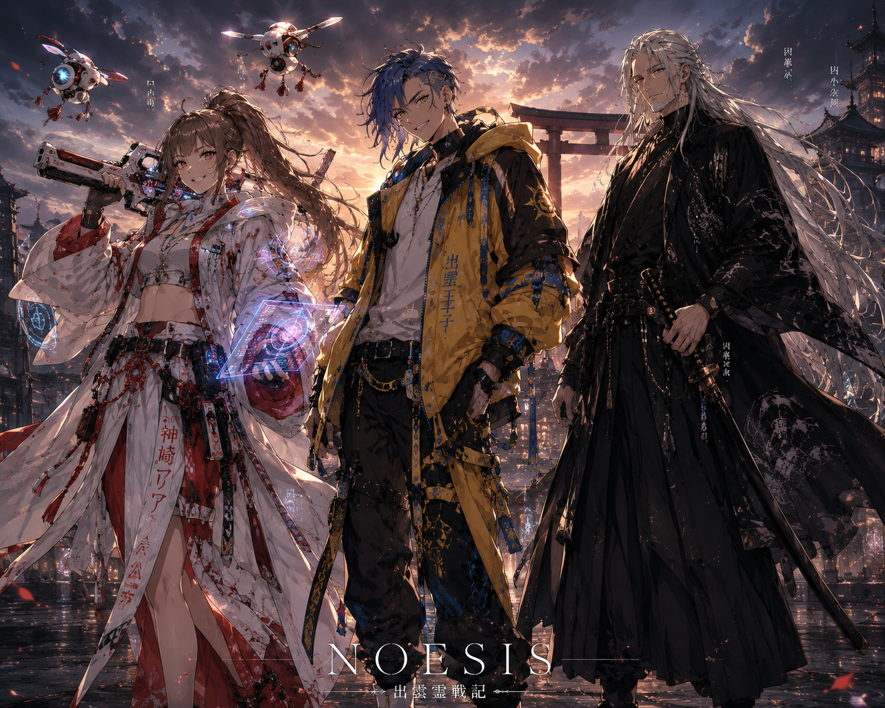

第一話 静寂に沈む青い光
NOESIS覚醒編
神崎蓮が母の死後、青い光とNOESISの名を認識する。喪失が物語の起動条件となり、少年が観測者へ変わる。
設定キー: 神崎蓮 / NOESIS / 神崎マリア
小説家になろう公開版「NOESISーノエシスー」を、設定資料サイト用に章・話数・要点で整理。本文転載ではなく、公開版の設定反映メモとして管理する。
公開元: 小説家になろう NOESISーノエシスー。2026年6月時点で第20話まで確認。

NOESIS覚醒編
神崎蓮が母の死後、青い光とNOESISの名を認識する。喪失が物語の起動条件となり、少年が観測者へ変わる。
設定キー: 神崎蓮 / NOESIS / 神崎マリア
NOESIS覚醒編
因幡剛と因幡組が登場。NOESISは合理的に状況を解析し、蓮の戦い方が人間的な喧嘩ではなく観測に近いものとして示される。
設定キー: 因幡剛 / 因幡組 / 出雲への伏線
NOESIS覚醒編
NOESISが身体制御へ侵食し始め、右目の青い光と世界の深淵を見返す感覚が強まる。第三話の盲目の少年設定とも接続する余地がある。
設定キー: 神崎蓮 / NOESIS / 盲目の少年候補
NOESIS覚醒編
因幡組の倉庫で、蓮が因幡剛を見る。NOESISの視点が人間を人間として見ない危うさを帯び始める。
設定キー: 神崎蓮 / 因幡剛 / 観測者
NOESIS覚醒編
因幡剛との戦いで、NOESISは喧嘩を観測へ変える。因幡組は蓮の異常性を目撃する。
設定キー: 神崎蓮 / 因幡剛 / 因幡組
NOESIS覚醒編
月乃瀬神社と月花鏡の気配が描かれる。盤上の戦争が始まる予兆として、澄華側の世界観が開く。
設定キー: 月乃瀬神社 / 月乃瀬澄華 / 月花鏡
NOESIS覚醒編
将棋奨励会と月乃瀬神社が接続し、蓮という観測者が盤上の構造を書き換える。
設定キー: 神崎蓮 / 月乃瀬神社 / 盤上の戦争
NOESIS覚醒編
天城煌へ繋がる剣の才能が描かれる。蓮、澄華、煌の三人の運命が交差し始める。
設定キー: 天城煌 / 神崎蓮 / 月乃瀬澄華
NOESIS覚醒編
剣を技術として捉える視点と、天城煌だけが持つ異質性が提示される。
設定キー: 天城煌 / 剣 / NOESIS
NOESIS覚醒編
満月の夜、二人の天才が森の奥で対峙する。月乃瀬澄華の感応系能力が前面化する導入。
設定キー: 月乃瀬澄華 / 白銀の瞳
NOESIS覚醒編
月花鏡千里眼が未来の兆しを映す。澄華が世界の変化を感知する。
設定キー: 月乃瀬澄華 / 月花鏡千里眼
NOESIS覚醒編
怨霊戦争の始まりが告げられる。平将門と八王子戦争編への接続点。
設定キー: 平将門 / 怨霊戦争
NOESIS覚醒編
NOESIS開発者として神崎マリアの存在が明示され、第一章から第二章「神崎マリア編」へ移行する。
設定キー: 神崎マリア / NOESIS開発者
神崎マリア編 ― 出雲霊戦記 ―
25年前の熊野。13歳の神崎マリアが八尺瓊勾玉に「NOESIS」の名を与える起源譚。
設定キー: 神崎マリア13歳 / 八尺瓊勾玉 / 熊野大宮
神崎マリア編 ― 出雲霊戦記 ―
徐福が黒き来訪者として現れ、勾玉への執着を示す。熊野大宮クーデターと惨劇への導入。
設定キー: 徐福 / 八尺瓊勾玉 / 熊野大宮
神崎マリア編 ― 出雲霊戦記 ―
マリアが出雲へ亡命し、緋沙良命との出会いへ繋がる。後の世界運命を変える関係が始まる。
設定キー: 神崎マリア / 出雲王朝 / 緋沙良命
神崎マリア編 ― 出雲霊戦記 ―
四年後の出雲。勾玉を巡る戦いが既に始まっており、霊性戦争の輪郭が見える。
設定キー: 神崎マリア17歳 / 出雲 / 勾玉
神崎マリア編 ― 出雲霊戦記 ―
17歳のマリアがドローンやホログラムを扱う反乱軍エンジニアとして描かれる。神々が出雲へ集う季節が迫る。
設定キー: 神崎マリア17歳 / 出雲 / 霊光ガン
神崎マリア編 ― 出雲霊戦記 ―
村雨響香が少女時代に初めて敗北を知る。因幡小次郎と剣の王の系譜へ接続する。
設定キー: 村雨響香 / 因幡小次郎 / 剣の王
神崎マリア編 ― 出雲霊戦記 ―
深夜の出雲王朝で、マリアが徹夜で開発を続ける。NOESIS開発者としての姿が強化される。
設定キー: 神崎マリア / 出雲王朝 / 開発